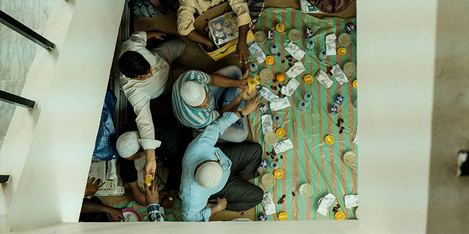
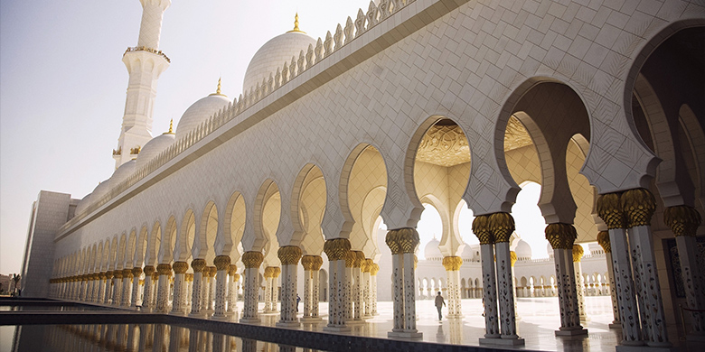

Sahur On The Road
SOTR atau Sahur On The Road, yaitu kegiatan membagi-bagikan makanan kepada orang-orang kurang mampu dan musafir yang ada di jalanan untuk bersantap sahur.

Donasi Pembangunan Masjid
Selain digunakan sebagai tempat ibadah, masjid juga merupakan pusat kehidupan komunitas muslim. karena itu kami membuka donasi untuk membantu pembangunan masjid.

Buka Puasa Bersama
kegiatan buka puasa bersama sudah menjadi tradisi bagi berbagai kalangan, selain untuk menyambung tali silaturahmi kegiatan ini juga dapat mengeratkan ikatan yang ada.